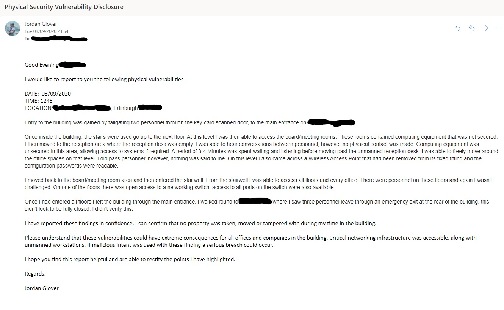

Physical Security Vulnerability Disclosure
Today we have the first of our guest blogs. A great write up of a physical security assessment by Jordan with some important takeaway points for anyone who works in an office. Jordan can be found on on LinkedIn here
Companies strive to be secure…Right? Your networks are secured, your applications are secure, your products and services seem impenetrable. You’ve got a tight-knit team that you trust and you’ve got the perfect working environment. The office space you’ve rented out is a great place to be, it feels like our second home. You enter the office building by keycard, you say ‘good morning’ to reception and you get on with your day. You’ve finished up and just before you leave you hit that green button to open the door on the way out.
Recently I submitted a vulnerability disclosure to a company that rents out office space. This building hosts over 90 businesses inside, covering a variety of industries.
I didn’t have any tools or equipment with me, I was smartly dressed carrying a black leather conference folder.
Gaining Access
The main entrance to the building required a RFID card to access from street level. There was also a button to call through to reception.
Two personnel walked up the steps to the door, deep in conversation. One pulled out their card, scanned it and pulled the door open. Carrying on with their conversation they held the door open for me. A quick “Thanks” and they approached the lifts. Once inside there were only two options, take the lift or take a staircase.
Internal Movement
I chose to take the stairs. At the top you could turn left to Reception, or turn right for the meeting rooms. All four large meeting rooms had unsecured computing equipment in them. The final door lead to another staircase that accessed all floors of the building. I turned back and headed to reception.
Reception
On entering the reception area, you are met with a large desk. To the left of the desk are the lifts, these make a loud audible tone just before the doors open. To the right is a throughway to the rest of the floor.
The reception desk was empty. I could hear people clearly in conversation behind a door. I waited for several minutes before passing the desk and freely moved around the rest of the spaces on that floor. I returned to the desk and it remained empty. The computing equipment behind the desk was freely accessible. I left the reception area and headed back to the staircase, that allowed me access to all floors.
Internal Movement
From the stairwell, each floor was identified numerically. I visited every floor and walked around the floors and office spaces. I was met be several people on each floor, however never challenged.
Exiting
Leaving the building was via the same route as entry, RFID wasn’t required to exit, only a push button to unlock the door. Out of curiosity, I visited the rear of the building. To my surprise I saw three personnel exit the building through a fire door. It did look like it had been propped open, I didn’t go and check this though.
Concerns
- In addition to the unsecured computing equipment, on the same floor as Reception, there was a Wireless Access Point that had been removed from its fixing bracket, I was able to read the configuration passwords on the back.
- On one of the higher floors I was able to access an ethernet switch. Complete access was available to all the ports, there were no port locks installed on empty ports.
- Reception – This concerns me a lot, as a reception desk has a duty and responsibility. A similar role to a sangar, or guard duty. If the lift had made the sound, would the person have walked over, are they relying on the sound to let them know someone has arrived in the area?
- I passed a large number of people in the building and not once was I challenged.
- Entry was a simple tailgate. Is this a habit of personnel to let people in behind them?
- The fire escape, why are personnel using this freely?
If want to take anything away from reading this, let it be this – If it doesn’t look or sound right, it’s probably not. Don’t be afraid to ask a simple question “Would you like me to help you find who you are looking for” “Have you got your card with you”. No one should be frowned upon for doing the right thing.

Subscribe to Hacker Street
Get the latest posts delivered right to your inbox